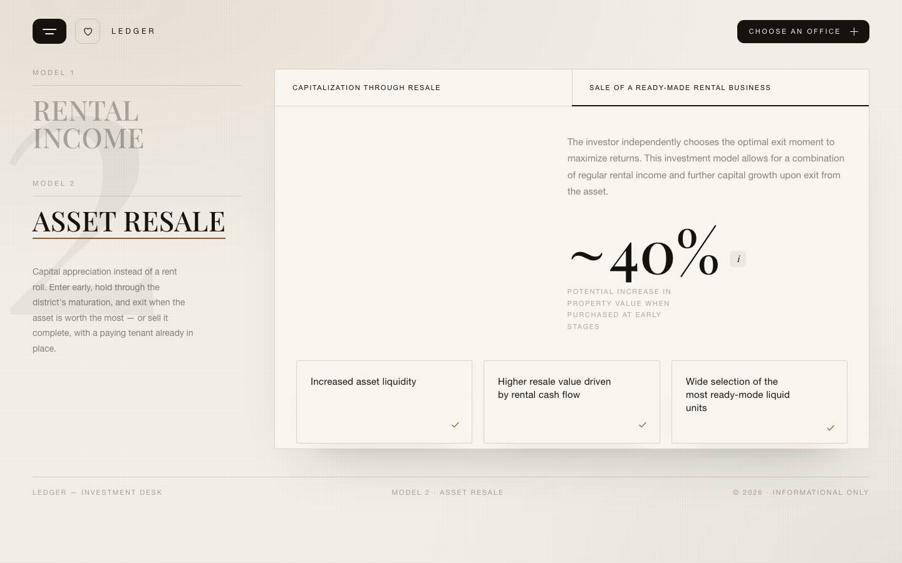

Batch-5 (vanilla-транспіляція) ↔ live AIR investment desktop (Desktop-air.mp4 t165-180)
CD віддав DC-формат (React, не рендериться) → транспільовано в vanilla. Механіка звірена ЧИСЛАМИ (calc 12/12 · resale 15/15). Тут ОКО на композицію проти живих кадрів. Фінал — Єгор.
01 · INVEST-CALCULATOR (LEDGER) ↔ live b11
наше LEDGER: MODEL1/2, CASE1/2, param-табл, readout ~11.0 YEARS/~1 200 000live: CASE1/2, OFFICE 84.7 M², payback ~8.3 YEARS/~423 500
✅ Композиція 1-в-1: MODEL 1/2 рейка ліворуч, CASE 1/2 таби, param-таблиця (unit price/rate/indexation/op costs/tax) зі степерами, два readout праворуч, «Choose an office» бенд-плитки. Гейти: input→обидва readout консистентно (pay 8.3→7.7=readout), office-update, 0 err.
02 · RESALE-STEPS (LEDGER) ↔ live b12
State A: гігант 1·2·3 + ~40%
наше: 1·2·3 blur-sharpen + step-caps + ~40% + (i) + 3 check-cardslive: MODEL 2, sub-таби, 1·2·3, ~40%
State B: параграф + ~40% (sub-tab 2)


наше: параграф + ~40% + (i) + check-cards (чистий handoff зі State A)live: sub-tab 2, параграф + ~40% + check-cards
✅ Композиція 1-в-1: MODEL 2 активний, sub-таби «Capitalization / Sale of ready business», гігант 1·2·3, ~40% з (i), 3 check-cards з ✓. Гейти: blur-sharpen стаггер, sub-tab swap = ЧИСТИЙ handoff (per-rAF: НІКОЛИ обидва стани в боксі одночасно), count-up 40%, return-A re-runs, 0 err. Урок caption-каші batch-4 застосовано (handoff, не overlap).